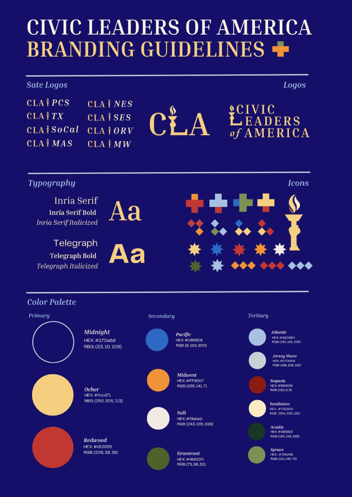
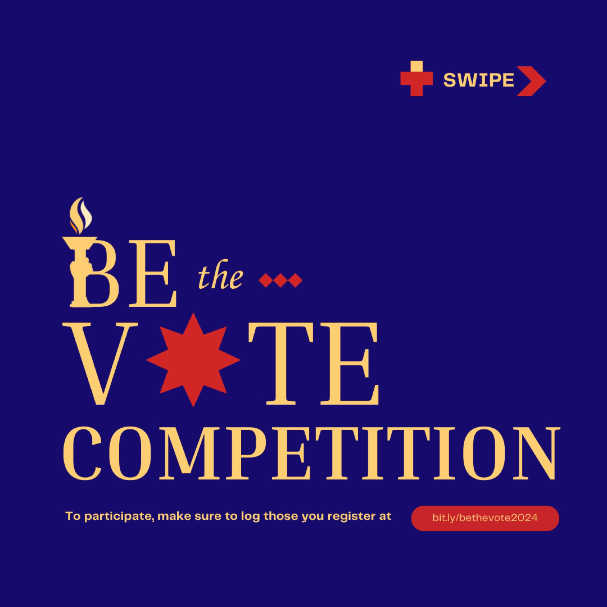
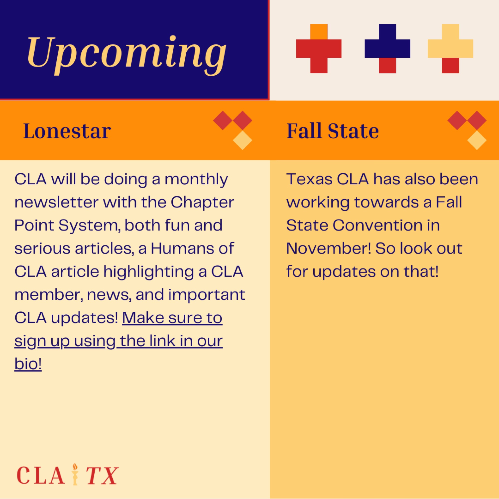

Civic Leaders of America
Software used: Canva, Adobe Illustrator, Figma, Instagram
Civic Leaders of America is a student-led activism organization that I led the branding and marketing for.
The branding utilizes colors from the US flag but replaces the white with yellow to represent working with each other to bring common well-being. The “L” in CLA, shows how the members in the organization are going to be a part of the next leaders of our generation that can bring this change into our nation.

Marketing

